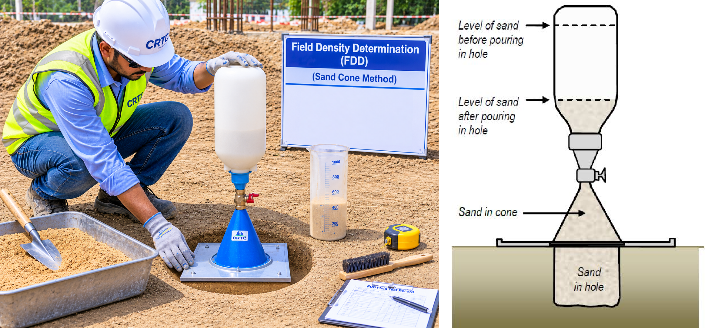

What to prepare before CRTC arrives to measure in-place density of compacted fill, subgrade or base with the sand cone method, so that the test is valid and the visit is not wasted.
A small hole is dug in the compacted layer. The soil removed is weighed, and its moisture content is found. The volume of the hole is measured by filling it with dry, calibrated sand from a cone apparatus. Dividing the weight of dry soil by the volume gives the in-place dry density, which is compared with the laboratory reference to give the degree of compaction.
The method is simple, but it is sensitive to the test surface, to vibration and to moisture change. Good site preparation matters as much as the test itself.
Tick items as you complete them. Your progress is saved in this browser.
Stop rollers, rigs and traffic near the test point while the sand is running. Vibration changes the sand volume and gives a wrong density.
Search, or filter by topic.
As soon as the layer is finished and before the next layer or heavy traffic. Waiting lets the surface dry or re-wet, which changes the moisture and can affect the result.
Larger than the base plate, level and firm, so the plate seats fully on the surface. CRTC will confirm the size needed for the apparatus used.
To report a degree of compaction, CRTC needs the laboratory maximum dry density and optimum moisture content for the same material. Send your results, or send a bulk sample and ask CRTC for the quantity needed.
Do not test. Wet, soft or flooded surfaces give unreliable results. Let the area drain and firm up, or consult CRTC.
Vibration makes loose sand settle in the hole and cone, which changes the measured volume. Stop rollers, rigs and traffic nearby while readings are taken.
Typically a sand-cone apparatus with a base plate, calibrated sand, a balance, digging tools, sealed containers for the excavated soil and a means of finding moisture content. Ask CRTC for details.
Provide shelter. Rain changes the soil moisture and wind disturbs the sand. Testing may be paused or rescheduled.
Follow your specification for the number and spacing of tests per layer or area. Tell CRTC the planned layout before the visit.
Test ID and location, layer, wet density, moisture content, dry density, the reference density and moisture content, the degree of compaction, and the specified requirement.
Moisture content may need oven drying, so final results can take longer than the visit itself. Ask CRTC for turnaround; it is normally [X] working days.
No. It is a spot check at one location. Use the number and spread of tests your specification asks for, and retest or investigate where a result is questionable.
Yes. Soils with large voids, coarse rock fill, very soft or saturated ground are unsuitable. CRTC will advise on an alternative method.
No matching questions. Try another word.
This guideline summarizes good practice for the sand cone method in line with ASTM D1556 and AASHTO T191. It does not replace those standards or your project specification, which govern if they differ. Please confirm requirements with CRTC before testing.